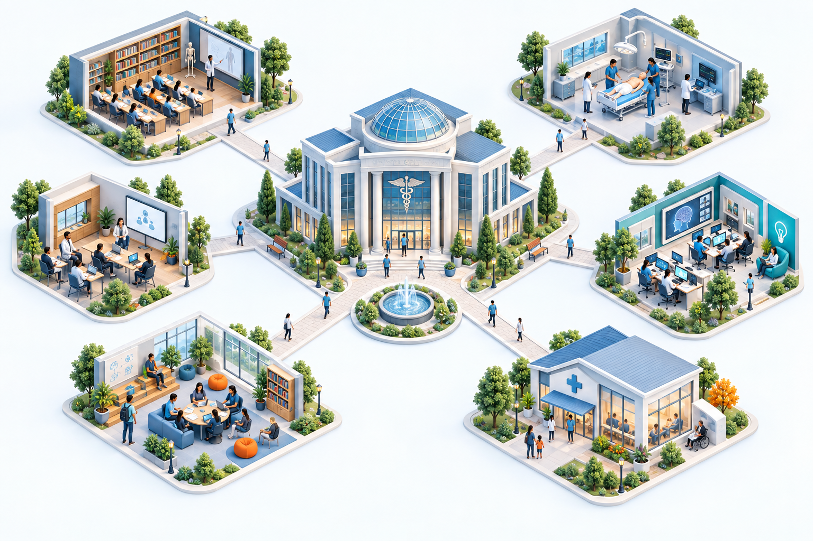

MEDICAL EDUCATION INNOVATION
의대교육혁신사업 결과
교육의 변화가 모이는 곳.
과제별 여정과 성과를 한눈에 살펴보세요.
EXPLORE THE MAP
과제를 클릭해 둘러보세요한눈에 보는 교육혁신 지도

ILLUSTRATED PROJECT MAP
그림은 교육혁신의 연결을 표현한 개념도입니다.
PROJECT INDEX
전체 과제 06
과제별 추진 내용부터 결과 자료까지
01임시 과제
교육과정 혁신
교육과정의 변화와 새로운 학습 경험을 담을 공간입니다.
과제 살펴보기
02임시 과제
임상실습 고도화
임상교육과 실습 운영의 개선 내용을 담을 공간입니다.
과제 살펴보기
03임시 과제
교수역량 강화
교수자의 교육역량 개발과 교수법 사례를 담을 공간입니다.
과제 살펴보기
04임시 과제
디지털 교육환경
디지털 학습 기반과 교육환경의 변화를 담을 공간입니다.
과제 살펴보기
05임시 과제
학생 성장 지원
학생의 학습과 성장 지원에 관한 내용을 담을 공간입니다.
과제 살펴보기
06임시 과제
지역사회 연계
지역사회와 함께하는 교육 및 협력 사례를 담을 공간입니다.
과제 살펴보기
CONNECTED ARCHIVE
한 과제의 시작부터,
변화의 기록까지.
- 01과제 개요
목표와 추진 방향
- 02추진 내용 · 주요 성과
실행 과정과 변화
- 03세부 내용 · 결과 자료
상세 기록과 근거 자료